Chapter 8. Scalability: LASSO & PCA
Overview
Chapter 8 is about Scalability. LASSO and PCA will be introduced. LASSO stands for the least absolute shrinkage and selection operator, which is a representative method for feature selection. PCA stands for the principal component analysis, which is a representative method for dimension reduction. Both methods can reduce the dimensionality of a dataset but follow different styles. LASSO, as a feature selection method, focuses on deletion of irrelevant or redundant features. PCA, as a dimension reduction method, combines the features into a smaller number of aggregated components (a.k.a., the new features). A remarkable difference between the two approaches is that, while both create a dataset with a smaller dimensionality, in PCA the original features are used to derive the new features201 As a result, no feature is discarded..
LASSO
Rationale and formulation
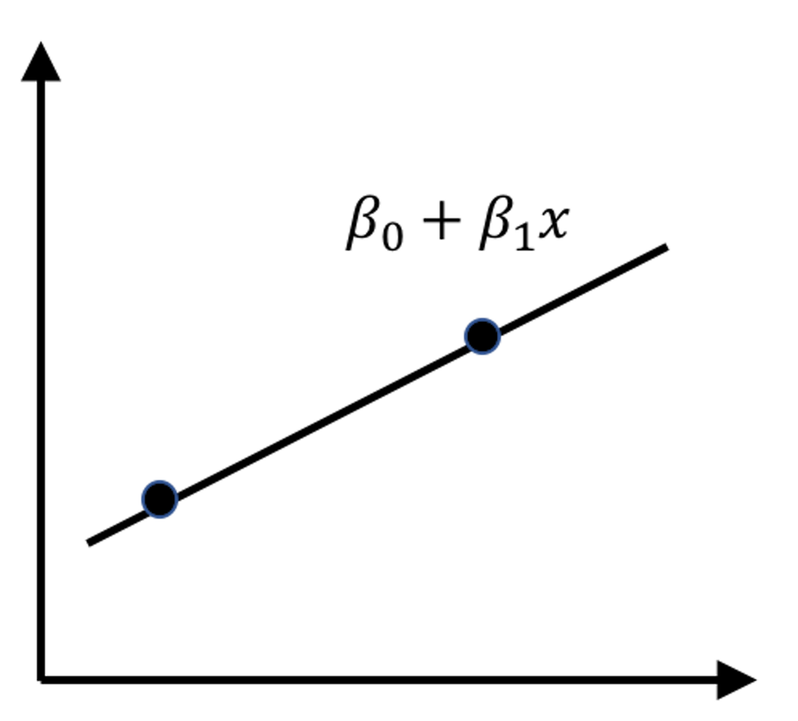 Figure 143: A line is not a model
Two points determine a line, as shown in Figure 143. It shares the same geometric form as a linear regression model, but it is a deterministic geometric pattern and has nothing to do with error.
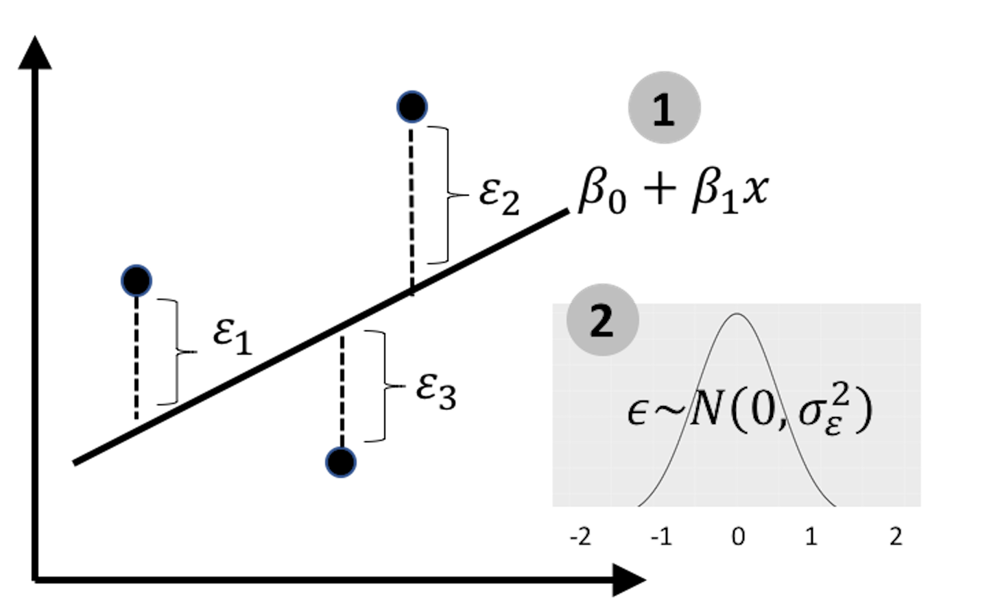 Figure 144: Revisit the linear regression model
With one more data point, magic happens: as shown in Figure 144, now we can estimate the residuals and study the systematic patterns of error. The line in Figure 144 becomes a statistical model.
The two lines in Figures 143 and 144, one is a deterministic pattern, while another is a statistical model, are like homonym. The different meanings share the same form of their signifier (e.g., like the word bass that means a certain sound that is low and deep, or a type of fish).
The error is a defining component of a statistical model. It models the noise in the data. In an application context, understanding the noise and knowing how much proportion the noise contributes to the total variation of the dataset is important knowledge. And, to derive the p-values of the regression coefficients, we need the noise so that we can compare the strength of the estimated coefficients with the noise to evaluate if the estimated coefficients are significantly different from random manifestation (i.e., if we cannot model the noise, then we have no basis to define what is random manifestation.).
To model a linear regression model, we need enough data points to estimate the error. For the simple example when there is only one predictor \(x\), as shown in Figures 143 and 144, we would need at least \(3\) data points to estimate the error202 While this is obvious from Figures 143 and 144, we can also obtain the conclusion by derivation. I.e., given two data points, \((x_1, y_1)\) and \((x_2, y_2)\) we could write two equations, \(y_1 = \beta_{0}+\beta_{1} x_1\) and \(y_2 = \beta_{0}+\beta_{1} x_2\).. This is just enough to solve for the \(2\) regression coefficients. Consider a problem with \(10\) variables, what is the minimum number of data points needed to enable the estimation of error203 The answer is \(12\). Suppose that we only have \(11\) data points. The regression line is defined by \(11\) regression coefficients. For each data point, we can write up an equation. Thus, \(11\) data points are just enough to estimate the \(11\) regression coefficients, leaving no room for estimating errors.?
From the examples aforementioned, we could deduce that the number of data points, i.e., denoted as \(N\), needs to be larger than the number of variables, i.e., denoted as \(p\). This is barely a minimum requirement of linear regression, as we haven’t asked how many data points are needed to ensure high-quality estimation of the parameters. In classic settings in statistics, \(N\) is assumed to be much larger than \(p\) in order to prove asymptotics—a common approach to prove a statistical model is valid. Practically, linear regression model finds difficulty in applications where the ratio \(N/p\) is small. In recent years, there are applications where the number of data points is even smaller than the number of variables, i.e., commonly referred to as \(N < p\) problems.
When increasing \(N\) is not always a feasible option, reducing \(p\) is a necessity. Some variables may be irrelevant or simply noise. Even if all variables are statistically informative, when considered as a whole, some of them may be redundant, and some are weaker than others. In those scenarios, there is room for us to wriggle with the problematic dataset and improve on the ratio \(N/p\) by reducing \(p\).
LASSO was invented in 1996 to sparsify the linear regression model and allow the regression model to select significant predictors automatically204 Tibshirani, R. Regression shrinkage and selection via the Lasso, Journal of the Royal Statistical Society (Series B), Volume 58, Issue 1, Pages 267-288, 1996..
Remember that, to estimate \(\boldsymbol{\beta}\), the least squares estimation of linear regression is
\[\begin{equation} \small \boldsymbol{\hat \beta} = \arg\min_{\boldsymbol \beta} { (\boldsymbol{y}-\boldsymbol{X} \boldsymbol{\beta})^{T}(\boldsymbol{y}-\boldsymbol{X} \boldsymbol{\beta}), } \tag{83} \end{equation}\]
where \(\boldsymbol{y} \in \mathbb{R}^{N \times 1}\) is the measurement vector of the outcome variable, \(\boldsymbol{X} \in \mathbb{R}^{N \times p}\) is the data matrix of the \(N\) measurement vectors of the \(p\) predictors, \(\boldsymbol \beta \in \mathbb{R}^{p \times 1}\) is the regression coefficient vector205 Here, we assume that the data is normalized/standardized and no intercept coefficient \(\beta_0\) is needed. Normalization means \(\sum_{n=1}^N x_{nj}/N=0\), \(\sum_{n=1}^N x_{ij}^2/N=1\) for \(j=1,2,\dots,p\) and \(\sum_{n=1}^N y_n/N=0\). Normalization is a common practice, and some R packages automatically normalize the data as a default preprocessing step before the application of a model..
The formulation of LASSO is
\[\begin{equation} \small \boldsymbol{\hat \beta} = \arg\min_{\boldsymbol \beta} \left \{ \underbrace{(\boldsymbol{y}-\boldsymbol{X} \boldsymbol{\beta})^{T}(\boldsymbol{y}-\boldsymbol{X} \boldsymbol{\beta})}_{\text{Least squares}} + \underbrace{\lambda \lVert \boldsymbol{\beta}\rVert_{1}}_{L_1 \text{ norm penalty}} \right \} \tag{84} \end{equation}\]
where \(\lVert \boldsymbol{\beta} \rVert_1 = \sum_{i=1}^p \lvert \beta_i \rvert\). The parameter, \(\lambda\), is called the penalty parameter that is specified by user of LASSO. The larger the parameter \(\lambda\), the more zeros in \(\boldsymbol{\hat \beta}\).
It could be seen that LASSO embodies two components in its formulation. The \(1\)^{st} term is the least squares loss function inherited from linear regression that is used to measure the goodness-of-fit of the model. The \(2\) term is the sum of absolute values of elements in \(\boldsymbol{\beta}\) that is called the \(L_1\) norm penatly. It measures the model complexity, i.e., smaller \(\lVert \boldsymbol{\beta} \rVert_1\) tends to create more zeros in \(\boldsymbol{\beta}\), leading to a simpler model. In practice, by tuning the parameter \(\lambda\), we hope to find the best model with an optimal balance between model fit and model complexity.
Figure 145: Path solution trajectory of the coefficients; each curve corresponds to a regression coefficient

As shown in Figure 145, LASSO can generate a path solution trajectory that visualizes the solutions of \(\boldsymbol{\beta}\) for a continuum of values of \(\lambda\). Model selection criteria such as the Akaike Information Criteria (AIC) or cross-validation can be used to identify the best \(\lambda\) that would help us find the final model, i.e., as the vertical line shown in Figure 145. When many variables are deleted from the model, the dimensionality of the model is reduced, and \(N/p\) is increased.
The shooting algorithm
We introduce the shooting algorithm to solve for the optimization problem shown in Eq. (84). Let’s consider a simple example when there is only one predictor \(x\). The objective function in Eq. (84) could be rewritten as
\[\begin{equation} \small l\left(\beta\right)=(\boldsymbol{y} - \boldsymbol{X}\beta)^{T}(\boldsymbol{y} - \boldsymbol{X}\beta) + \lambda \lvert \beta \rvert. \tag{85} \end{equation}\]
To solve Eq. (85), we take the differential of \(l\left(\beta\right)\) and put it equal to zero
\[\begin{equation} \small \frac {\partial l(\beta)}{\partial \beta}=0. \tag{86} \end{equation}\]
A complication of this differential operation is that the \(L_1\)-norm term, \(\lvert \beta \rvert\), has no gradient when \(\beta=0\). There are three scenarios:
If \(\beta>0\), then \(\frac {\partial L(\beta)}{\partial \beta}=2\beta-2\boldsymbol{X}^T\boldsymbol{y}+\lambda\). Based on Eq. (86), we can estimate \(\beta\) as \(\hat \beta =\boldsymbol{X}^T\boldsymbol{y}-\lambda/2\). Note that this estimate of \(\beta\) may turn out to be negative. If that happens, it would be a contradiction since we have assumed \(\beta>0\) to derive the result. This contradiction points to the only possibility that \(\beta=0\).
If \(\beta<0\), then \(\frac {\partial L(\beta)}{\partial \beta}=2\beta-2\boldsymbol{X}^T\boldsymbol{y}-\lambda\). Based on Eq. (86), we have \(\beta = \boldsymbol{X}^T\boldsymbol{y}+\lambda/2\). Note that this estimate of \(\beta\) may turn out to be positive. If that happens, it would be a contradiction since we have assumed \(\beta<0\) to derive the result. This contradiction points to the only possibility that \(\beta=0\).
If \(\beta=0\), then we have had the solution and no longer need to derive the gradient.
In summary, the solution of \(\beta\) is
\[\begin{equation} \small \hat \beta = \begin{cases} \boldsymbol{X}^T\boldsymbol{y}-\lambda/2, &if \, \boldsymbol{X}^T\boldsymbol{y}-\lambda/2>0 \\ \boldsymbol{X}^T\boldsymbol{y}+\lambda/2, &if \, \boldsymbol{X}^T\boldsymbol{y}+\lambda/2<0 \\ 0, & if \, \lambda/2 \geq \lvert\boldsymbol{X}^T\boldsymbol{y}\rvert. \end{cases}\tag{87} \end{equation}\]
Now let’s consider the general case as shown in Eq. (84). Figure 146 illustrates the basic idea: to apply the conclusion (with a slight variation) we have obtained in Eq. (87) to solve Eq. (84). Each iteration solves for one regression coefficient, assuming that all the other coefficients are fixed (i.e., to their latest values).
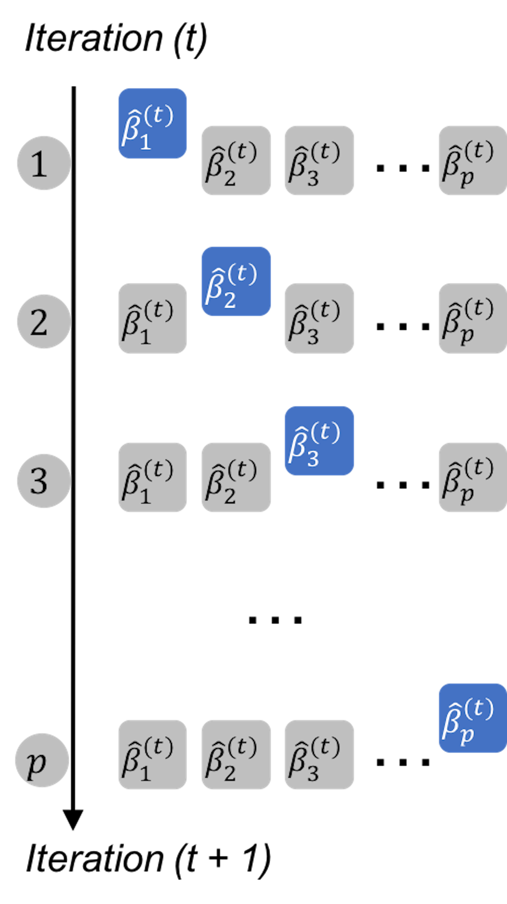 Figure 146: The shooting algorithm iterates through the coefficients
In each iteration, we solve a similar problem with the one-predictor special problem shown in Eq. (85). For instance, denote \(\beta_j^{(t)}\) as the estimate of \(\beta_j\) in the \(t^{th}\) iteration. If we fix the other regression coefficients as their latest estimates, we can rewrite Eq. (84) as a function of \(\beta_j^{(t)}\) only
\[\begin{equation} \small l(\beta_j^{(t)}) = \left (\boldsymbol{y}^{(t)}_j - \boldsymbol{X}_{(:,j)}\beta_j^{(t)} \right )^{T} \left (\boldsymbol{y}^{(t)}_j - \boldsymbol{X}_{(:,j)}\beta_j^{(t)}\right ) + \lambda \lvert \beta_j^{(t)} \rvert, \tag{88} \end{equation}\]
where \(\boldsymbol{X}_{(:,j)}\) is the \(j^{th}\) column of the matrix \(\boldsymbol{X}\), and
\[\begin{equation} \small \boldsymbol{y}^{(t)}_j = \boldsymbol{y-} \sum\nolimits_{k\neq j}\boldsymbol{X}_{(:,k)}\hat\beta^{(t)}_{k}. \tag{89} \end{equation}\]
Eq. (88) has the same structure as Eq. (85). We can readily apply the conclusion in Eq. (87) here and obtain
\[\begin{equation} \small \hat\beta_j^{(t)}=\begin{cases} q^{(t)}_j - \lambda / 2, & if \, q^{(t)}_j - \lambda/2 >0 \\ q^{(t)}_j + \lambda / 2, & if \, q^{(t)}_j + \lambda/2 <0 \\ 0, & if \, \lambda/2 \geq \lvert q^{(t)}_j \rvert, \end{cases} \tag{90} \end{equation}\]
where
\[\begin{equation} \small q^{(t)}_j=\boldsymbol{X}_{(:, j)}^T \boldsymbol{y}^{(t)}_j. \tag{91} \end{equation}\]
A small data example
Table 34: A dataset example for LASSO
| \(x_1\) | \(x_2\) | \(y\) |
|---|---|---|
| \(-0.707\) | \(0\) | \(-0.77\) |
| \(0\) | \(0.707\) | \(0.15\) |
| \(0.707\) | \(-0.707\) | \(0.62\) |
Consider a dataset example as shown in Table 34.206 To generate this dataset, we sampled the values of \(y\) using the model \[\begin{equation*} \small y =0.8x_1+\varepsilon, \text{ where } \varepsilon \sim N(0,0.5). \end{equation*}\] Only \(x_1\) is important.
In matrix form, the dataset is rewritten as
\[\begin{equation*} \small \boldsymbol{y}=\left[ \begin{array}{c}{-0.77} \\ {0.15} \\ {0.62}\end{array}\right], \text { } \boldsymbol{X}=\left[ \begin{array}{ccccc} {-0.707} & {0} \\ {0} & {0.707} \\ {0.707} & {-0.707}\end{array}\right]. \end{equation*}\]
Now let’s implement the Shooting algorithm on this data. The objective function of LASSO on this case is
\[\begin{equation*} \small \sum\nolimits_{n=1}\nolimits^3 [y_n-(\beta_1x_{n,1}+\beta_2x_{n,2})]^2+\lambda(\lvert \beta_1 \rvert+\lvert \beta_2 \rvert). \end{equation*}\]
Suppose that \(\lambda=1\), and we initiate the regression coefficients as \(\hat \beta_1^{(0)}=0\) and \(\hat \beta_2^{(0)}=1\).
To update \(\hat \beta_1^{(1)}\), based on Eq. (90), we first calculate \(\boldsymbol{y}^{(1)}_1\) using Eq. (89)
\[\begin{equation*} \small \boldsymbol{y}^{(1)}_1 = \boldsymbol{y-}\boldsymbol{X}_{(:,2)}\hat\beta_2^{(0)} = \begin{bmatrix} -0.7700 \\ -0.557 \\ 1.3270 \\ \end{bmatrix} . \end{equation*}\]
Then we calculate \(q^{(1)}_1\) using Eq. (91)
\[\begin{equation*} \small q^{(1)}_1=\boldsymbol{X}_{(:,1)}^T\boldsymbol{y}^{(1)}_1 = 1.7654. \end{equation*}\] As \[\begin{equation*} \small q^{(1)}_1 - \lambda/2 >0, \end{equation*}\] based on Eq. (90) we know that
\[\begin{equation*} \small \hat\beta_1^{(1)} = q^{(1)}_1 - \lambda/2 = 1.2654. \end{equation*}\]
Then we update \(\hat \beta_2^{(1)}\). We can obtain that \[\begin{equation*} \small \boldsymbol{y}^{(1)}_2 = \boldsymbol{y-}\boldsymbol{X}_{(:,1)}\hat\beta_1^{(1)} = \begin{bmatrix} 0.1876 \\ 0.1500 \\ -0.2746\\ \end{bmatrix} . \end{equation*}\] And we can get \[\begin{equation*} \small q^{(1)}_2=\boldsymbol{X}_{(:,2)}^T\boldsymbol{y}^{(1)}_2 = 0.3002. \end{equation*}\] As \[\begin{equation*} \small \lambda / 2 \geq \lvert q^{(1)}_2\rvert , \end{equation*}\] we know that \[\begin{equation*} \small \hat \beta_2^{(1)} = 0. \end{equation*}\]
Thus, with only one iteration, the Shooting algorithm identified the irrelevant variable.
R Lab
The 7-Step R Pipeline. Step 1 and Step 2 get dataset into R and organize the dataset in required format.
# Step 1 -> Read data into R workstation
#### Read data from a CSV file
#### Example: Alzheimer's Disease
# RCurl is the R package to read csv file using a link
library(RCurl)
url <- paste0("https://raw.githubusercontent.com",
"/analyticsbook/book/main/data/AD_hd.csv")
AD <- read.csv(text=getURL(url))
str(AD)# Step 2 -> Data preprocessing
# Create your X matrix (predictors) and Y
# vector (outcome variable)
X <- AD[,-c(1:4)]
Y <- AD$MMSCORE
# Then, we integrate everything into a data frame
data <- data.frame(Y,X)
names(data)[1] = c("MMSCORE")
# Create a training data
train.ix <- sample(nrow(data),floor( nrow(data)) * 4 / 5 )
data.train <- data[train.ix,]
# Create a testing data
data.test <- data[-train.ix,]
# as.matrix is used here, because the package
# glmnet requires this data format.
trainX <- as.matrix(data.train[,-1])
testX <- as.matrix(data.test[,-1])
trainY <- as.matrix(data.train[,1])
testY <- as.matrix(data.test[,1])Figure 147: Path trajectory of the fitted regression parameters. The figure should be read from right to left (i.e., \(\lambda\) from small to large). Variables that become zero later are stronger (i.e., since a larger \(\lambda\) is needed to make them become \(0\)). The variables that quickly become zero are weak or insignificant variables.
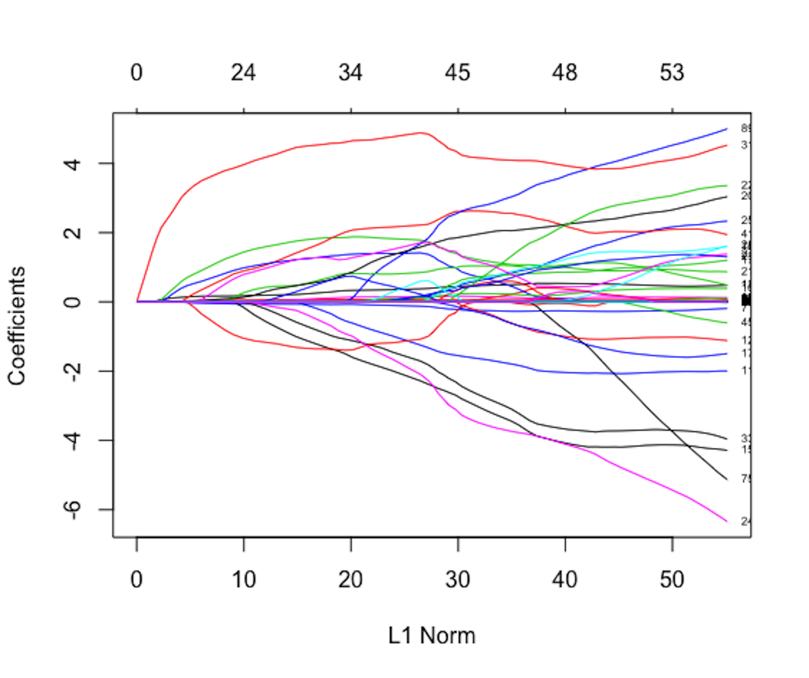Step 3 uses the R package glmnet207 Check out the argument glmnet to learn more. to build a LASSO model.
# Step 3 -> Use glmnet to conduct LASSO
# install.packages("glmnet")
require(glmnet)
fit = glmnet(trainX,trainY, family=c("gaussian"))
head(fit$beta)
# The fitted sparse regression parameters under
# different lambda values are stored in fit$beta.Step 4 draws the path trajectory of the LASSO models (i.e., as the one shown in Figure 145). The result is shown in Figure 147. It displays the information stored in fit$beta. Each curve shows how the estimated regression coefficient of a variable changes according to the value of \(\lambda\).
# Step 4 -> visualization of the path trajectory of
# the fitted sparse regression parameters
plot(fit,label = TRUE)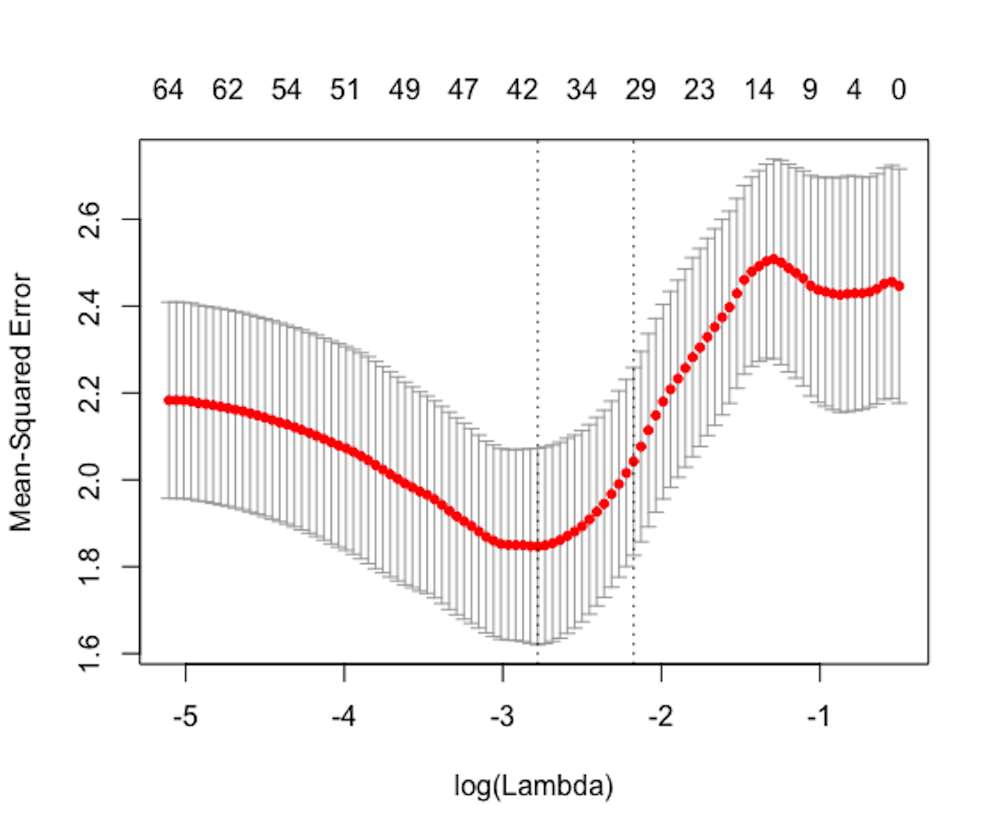 Figure 148: Cross-validation result. It is hoped (because it is not always the case in practice) that it is U-shaped, like the one shown here, so that we can spot the optimal value of \(\lambda\), i.e., the one that corresponds to the lowest dip point.
Step 5 uses cross-validation to identify the best \(\lambda\) value for the LASSO model. The result is shown in Figure 148.
# Step 5 -> Use cross-validation to decide which lambda to use
cv.fit = cv.glmnet(trainX,trainY)
plot(cv.fit)
# look for the u-shape, and identify the lowest
# point that corresponds to the best modelStep 6 views the best model and evaluates its predictions.
# Step 6 -> To view the best model and the
# corresponding coefficients
cv.fit$lambda.min
# cv.fit$lambda.min is the best lambda value that results
# in the best model with smallest mean squared error (MSE)
coef(cv.fit, s = "lambda.min")
# This extracts the fitted regression parameters of
# the linear regression model using the given lambda value.
y_hat <- predict(cv.fit, newx = testX, s = "lambda.min")
# This is to predict using the best model
cor(y_hat, data.test$MMSCORE)
mse <- mean((y_hat - data.test$MMSCORE)^2)
# The mean squared error (mse)
mseResults are shown below.
## 0.2969686 # cor(y_hat, data.test$MMSCORE)
## 2.453638 # mseStep 7 re-fits the regression model using the variables selected by LASSO. As LASSO put \(L_1\) norm on the regression parameters, it not only penalizes the regression coefficients of the irrelevant variables to be zero, but also penalizes the regression coefficients of the selected variable. Thus, the estimated regression coefficients of a LASSO model tend to be smaller than they are (i.e., this is called bias in machine learning terminology).
# Step 7 -> Re-fit the regression model with selected variables
# by LASSO
var_idx <- which(coef(cv.fit, s = "lambda.min") != 0)
lm.AD.reduced <- lm(MMSCORE ~ ., data =
data.train[,var_idx,drop=FALSE])
summary(lm.AD.reduced)Principal component analysis
Rationale and formulation
A dataset has many variables, but its inherent dimensionality may be smaller than it appears to be. For example, as shown in Figure 149, the \(10\) variables of the dataset, \(x_1\), \(x_2\), \(\ldots\), \(x_{10}\), are manifestations of three underlying independent variables, \(z_1\), \(z_2\), and \(z_3\). In other words, a dataset of \(10\) variables is not necessarily a system of \(10\) degrees of freedom.
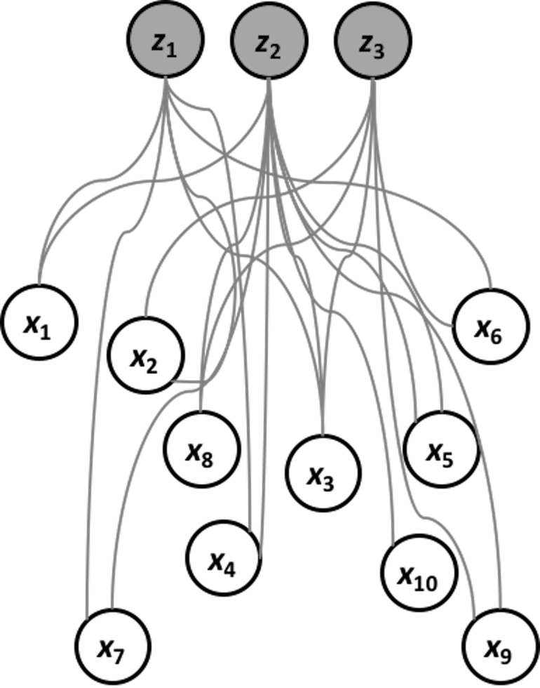 Figure 149: PCA—to uncover the Master of Puppets (\(z_1\), \(z_2\), and \(z_3\))
The question is how to uncover the “Master of Puppets,” i.e., \(z_1\), \(z_2\), and \(z_3\), based on data of the observed variables, \(x_1\), \(x_2\), \(\ldots\), \(x_{10}\).
Let’s look at the scattered data points in Figure 150. If we think of the data points as stars, and this is the universe after the Big Bang, we can identify two potential forces here: a force that stretches the data points towards one direction (i.e., labeled as the \(1^{st}\) PC)208 PC stands for the .; and another force (i.e., labeled as the \(2^{nd}\) PC) that drags the data points towards another direction. The forces are independent, so in mathematical terms they follow orthogonal directions. And it might be possible that the \(2^{nd}\) PC only represents noise. If that is the case, calling it a force may not be the best way. Sometimes we say each PC represents a variation source.
Figure 150: Illustration of the principal components in a dataset with 2 variables; the main variation source is represented by th e 1st dimension
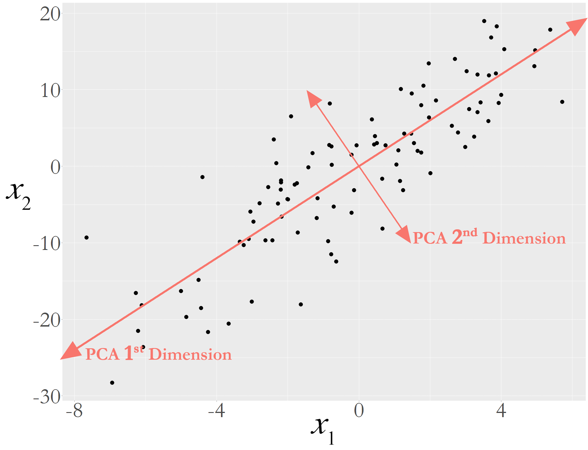This interpretation of Figure 150 may seem natural. If so, it is only because it makes a tacit assumption that seems too natural to draw our attention: the forces are represented as lines209 Why is a force a line? It could be a wave, a spiral, or anything other than a line. But the challenge is to write up the mathematical form of an idea—like the example of maximum margin in Chapter 7., their mathematical forms are linear models that are defined by the existing variables, i.e., the two lines in Figure 150 could be defined by \(x_1\) and \(x_2\). The PCA seeks linear combinations of the original variables to pinpoint the directions towards which the underlying forces push the data points. These directions are called principal components (PCs). In other words, the PCA assumes that the relationship between the underlying PCs and the observed variables is linear. And because they are linear, it takes orthogonality to separate different forces.
Theory and method
The lines in Figure 150 take the form as \(w_1x_1 + w_2x_2\),210 For simplicity, from now on, we assume that all the variables in the dataset are normalized, i.e., for any variable \(x_i\), its mean is \(0\) and its variance is \(1\). where \(w_1\) and \(w_2\) are free parameters. To estimate \(w_1\) and \(w_2\) for the lines, we need to write an optimization formulation with an objective function and a constraints structure that carries out the idea outlined in Figure 150: to identify the two lines.
Figure 151: Any line \(z = w_1x_1 + w_2x_2\) leads to a new one-dimensional space defined by \(z\)
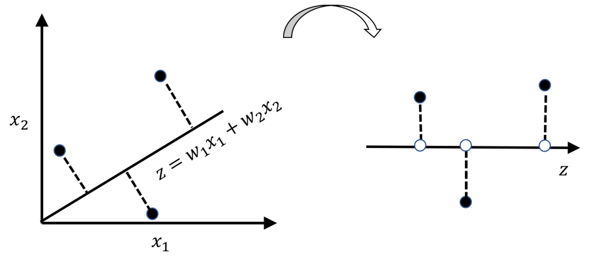As shown in Figure 151, any line \(z = w_1x_1 + w_2x_2\) leads to a new one-dimensional space defined by \(z\). Data points find their projections on this new space, i.e., the white dots on the line. The variance of the white dots provides a quantitative evaluation of the strength of the force that stretched the data points. The PCA seeks the lines that have the largest variances, which are the strongest forces stretching the data and scattering the data points along the PCs. Specifically, as there would be one line that represents the strongest force (a.k.a., as the \(1^{st}\) PC), the second line is called the \(2^{nd}\) PC, and so on.
To generalize the idea of Figure 151, let’s focus on the identification of the \(1^{st}\) PC first. Suppose there are \(p\) variables, \(x_1\), \(x_2\), \(\ldots\), \(x_{p}\). The line for the \(1^{st}\) PC is \(\boldsymbol{w}_{(1)}^T\boldsymbol{x}\). \(\boldsymbol{w}_{(1)}\in \mathbb{R}^{p \times 1}\) is the weight vector of the \(1^{st}\) PC211 It is also called the loading of the PC.. The projections of \(N\) data points on the line of the \(1^{st}\) PC, i.e., the coordinates of the white dots, are
\[\begin{equation} \small z_{1n} = \boldsymbol{w}_{(1)}^T\boldsymbol{x}_n, \text{ for } n=1, 2, \ldots, N, \tag{92} \end{equation}\]
where \(\boldsymbol{x}_n \in \mathbb{R}^{1 \times p}\) is the \(n^{th}\) data point.
As we mentioned, the \(1^{st}\) PC is the line that has the largest variance of \(z_1\). Suppose that the data have been standardized, we have
\[\begin{equation} var(z_1) = var\left(\boldsymbol{w}_{(1)}^T\boldsymbol{x}\right)=\frac{1}{N}\sum_{n=1}^N\left[\boldsymbol{w}_{(1)}^T\boldsymbol{x}_{n}\right]^2. \end{equation}\]
This leads to the following formulation to learn the parameter \(\boldsymbol{w}_{(1)}\)
\[\begin{equation} \small \boldsymbol{w}_{(1)} = \arg\max_{\boldsymbol{w}_{(1)}^T\boldsymbol{w}_{(1)}=1} \left \{ \sum\nolimits_{n=1}\nolimits^{N}\left [ \boldsymbol{w}_{(1)}^T\boldsymbol{x}_{n} \right ]^2\right \}, \tag{93} \end{equation}\]
where the constraint \(\boldsymbol{w}_{(1)}^T\boldsymbol{w}_{(1)}=1\) is to normalize the scale of \(\boldsymbol{w}\).212 Without which the optimization problem in Eq. (93) is unbounded. This also indicates that the absolute magnitudes of \(\boldsymbol{w}_{(1)}\) are often misleading. The relative magnitudes are more useful.
A more succinct form of Eq. (93) is
\[\begin{equation} \small \boldsymbol{w}_{(1)} = \arg\max_{\boldsymbol{w}_{(1)}^T\boldsymbol{w}_{(1)}=1}\left \{ \boldsymbol{w}_{(1)}^T\boldsymbol{X}^T\boldsymbol{X}\boldsymbol{w}_{(1)} \right\}, \tag{94} \end{equation}\]
where \(\boldsymbol{X}\in \mathbb{R}^{N \times p}\) is the data matrix that concatenates the \(N\) samples into a matrix, i.e., each sample forms a row in \(\boldsymbol{X}\). Eq. (94) is also known as the eigenvalue decomposition problem of the matrix \(\boldsymbol{X}^T\boldsymbol{X}\).213 \(\frac{\boldsymbol{X}^T\boldsymbol{X}}{N-1}\) is called the sample covariance matrix , usually denoted as \(\boldsymbol{S}\). \(\boldsymbol{S}\) could be used in Eq. (94) to replace \(\boldsymbol{X}^T\boldsymbol{X}\). In this context, \(\boldsymbol{w}_{(1)}\) is called the \(1^{st}\) eigenvector.
To identify the \(2^{nd}\) PC, we again find a way to iterate. The idea is simple: as the \(1^{st}\) PC represents a variance source, and the data \(\boldsymbol{X}\) contains an aggregation of multiple variance sources, why not remove the first variance source from \(\boldsymbol{X}\) and then create a new dataset that contains the remaining variance sources? Then, the procedure for finding \(\boldsymbol{w}_{(1)}\) could be used for finding \(\boldsymbol{w}_{(2)}\)—with \(\boldsymbol{w}_{(1)}\) removed, \(\boldsymbol{w}_{(2)}\) is the largest variance source.
This process could be generalized as:
- [Create \(\boldsymbol{X}_{(k)}\)] In order to find the \(k^{th}\) PC, we could create a dataset by removing the variation sources from the previous \(k-1\) PCs
\[\begin{equation} \small \boldsymbol{X}_{(k)}=\boldsymbol{X}-\sum_{s=1}^{k-1}\boldsymbol{w}_{(s)}\boldsymbol{w}_{(s)}^T. \tag{95} \end{equation}\]
- [Solve for \(\boldsymbol{w}_{(k)}\)] Then, we solve
\[\begin{equation} \small \boldsymbol{w}_{(k)}=\arg\max_{\boldsymbol{w}_{(k)}^T\boldsymbol{w}_{(k)}=1}\left \{ \boldsymbol{w}_{(k)}^T\boldsymbol{X}_{(k)}^T\boldsymbol{X}_{(k)}\boldsymbol{w}_{(k)} \right \}. \tag{96} \end{equation}\] We then compute \(\lambda_{(k)} = \boldsymbol{w}_{(k)}^T\boldsymbol{X}_{(k)}^T\boldsymbol{X}_{(k)}\boldsymbol{w}_{(k)}.\) \(\lambda_{(k)}\) is called the eigenvalue of the \(k^{th}\) PC.
So we create \(\boldsymbol{X}_{(k)}\) and solve Eq. (96) in multiple iterations. Many R packages have packed all the iterations into one batch. Usually, we only need to calculate \(\boldsymbol{X}^T\boldsymbol{X}\) or \(\boldsymbol{S}\) and use it as input of these packages, then obtain all the eigenvalues and eigenvectors.
This iterative algorithm would yield in total \(p\) PCs for a dataset with \(p\) variables. But usually, not all the PCs are significant. If we apply PCA on the dataset generated by the data-generating mechanism as shown in Figure 149, only the first 3 PCs should be significant, and the other 7 PCs, although they computationally exist, statistically do not exist, as they are manifestations of noise.
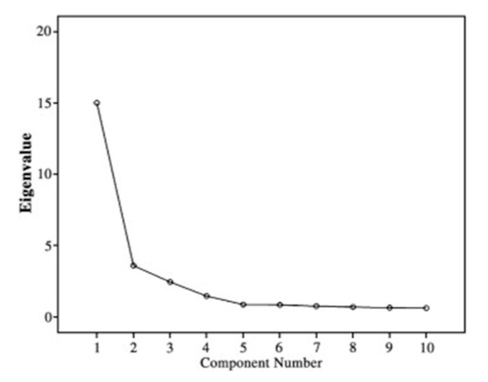 Figure 152: The scree plot shows that only the first 2 PCs are significant
In practice, we need to decide how many PCs are needed for a dataset. The scree plot as shown in Figure 152 is a common tool: it draws the eigenvalues of the PCs, \(\lambda_{(1)}, \lambda_{(2)}, \ldots, \lambda_{(p)}\). Then we look for the change point if it exists. We discard the PCs after the change point as they may be statistically insignificant.
A small data example
The dataset is shown in Table 35. It has \(3\) variables and \(5\) data points.
Table 35: A dataset example for PCA
| \(x_1\) | \(x_2\) |
|---|---|
| \(-10\) | \(6\) |
| \(-4\) | \(2\) |
| \(2\) | \(1\) |
| \(8\) | \(0\) |
| \(14\) | \(-4\) |
First, we normalize (or, standardize) the variables214 Recall that we assumed that all the variables are normalized when we derived the PCA algorithm. I.e., for \(x_1\), we compute its mean and standard derivation first, which are \(2\) and \(9.48\),215 In this example, numbers are rounded to \(2\) decimal places. respectively. Then, we distract each measurement of \(x_1\) from its mean and further divide it by its standard derivation. For example, for the first measurement of \(x_1\), \(-10\), it is converted as
\[\begin{equation*} \small \frac{-10 - 2}{9.48}=-1.26. \end{equation*}\]
The second measurement, \(-4\), is converted as
\[\begin{equation*} \small \frac{-4 - 2}{9.48}=-0.63. \end{equation*}\]
And so on.
Similarly, for \(x_2\), we compute its mean and standard derivation, which are \(1\) and \(3.61\), respectively. The standardized dataset is shown in Table 36.
Table 36: Standardized dataset of Table 35
| \(x_1\) | \(x_2\) |
|---|---|
| \(-1.26\) | \(1.39\) |
| \(-0.63\) | \(0.28\) |
| \(0\) | \(0\) |
| \(0.63\) | \(-0.28\) |
| \(1.26\) | \(-1.39\) |
We calculate \(\boldsymbol{S}\) as
\[\begin{equation*} \small \boldsymbol{S}=\boldsymbol{X}^T \boldsymbol{X} / 4 = \begin{bmatrix} 1 & -0.96 \\ -0.96 & 1 \\ \end{bmatrix} . \end{equation*}\]
Solving this eigenvalue decomposition problem216 E.g., using eigen() in R., for the \(1^{st}\) PC, we have
\[\begin{equation*} \small \lambda_1=1.96 \, \text{ and } \, \boldsymbol{w}_{(1)}=\left[ -0.71, \, 0.71\right]. \end{equation*}\]
Continuing to the \(2^{nd}\) PC, we have
\[\begin{equation*} \small \lambda_2=0.04 \, \text{ and } \, \boldsymbol{w}_{(2)}=\left[ -0.71, \, -0.71\right]. \end{equation*}\]
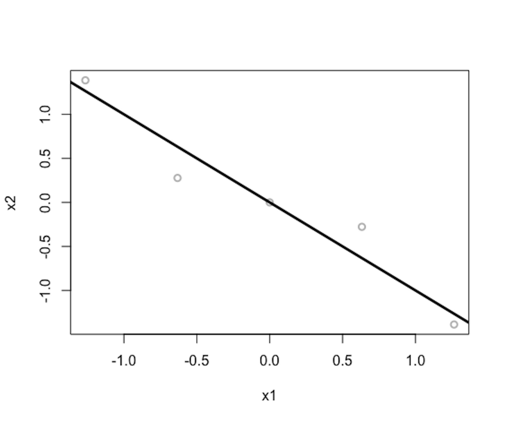 Figure 153: Gray dots are data points (standardized); the black line is the \(1^{st}\) PC
We can calculate the cumulative contributions of the \(2\) PCs
\[\begin{equation*} \small \text{For the } 1^{st} \text{ PC: } 1.96/(1.96+0.04) = 0.98. \end{equation*}\]
\[\begin{equation*} \small \text{For the } 2^{nd} \text{ PC: } 0.04/(1.96+0.04) = 0.02. \end{equation*}\]
The \(2^{nd}\) PC is statistically insignificant.
We visualize the \(1^{st}\) PC in Figure 153 (compare it with Figure 150). The R code to generate Figure 153 is shown below.
x1 <- c(-10, -4, 2, 8, 14)
x2 <- c(6, 2, 1, 0, -4)
x <- cbind(x1,x2)
x.scale <- scale(x) #standardize the data
eigen.x <- eigen(cor(x))
plot(x.scale, col = "gray", lwd = 2)
abline(0,eigen.x$vectors[2,1]/eigen.x$vectors[1,1],
lwd = 3, col = "black")The coordinates of the white dots (a.k.a., the projections of the data points on the PCs, as shown in Figure 151) can be obtained by using Eq. (92). Results are shown in Table 37. This is an example of data transformation.
Table 37: The coordinates of the white dots, i.e., a.k.a., the projections of the data points on the PCs
| \(z_1\) | \(z_2\) |
|---|---|
| \(1.88\) | \(-0.09\) |
| \(0.64\) | \(0.25\) |
| \(0\) | \(0\) |
| \(-0.64\) | \(-0.25\) |
| \(-1.88\) | \(0.09\) |
Data transformation is often a data preprocessing step before the use of other methods. For example, in clustering, sometimes we could not discover any clustering structure on the dataset of original variables, but we may discover clusters on the transformed dataset. In a regression model, as we have mentioned the issue of multicollinearity217 I.e., in Chapter 6 and Chapter 2., the Principal Component Regression (PCR) method uses the PCA first to convert the original \(x\) variables into the \(z\) variables and then applies the linear regression model on the transformed variables. This is because the \(z\) variables are PCs and they are orthogonal with each other, without issue of multicollinearity.
R Lab
The 6-Step R Pipeline. Step 1 and Step 2 get dataset into R and organize the dataset in the required format.218 It is not necessary to split the dataset into training and testing datasets before the use of PCA, if the purpose of the analysis is exploratory data analysis. But if the purpose of using PCA is for dimension reduction or feature extraction, which is an intermediate step before building a prediction model, then we should split the dataset into training and testing datasets, and apply PCA only on the training dataset to learn the loadings of the significant PCs. The R lab shows an example of this process.
# Step 1 -> Read data into R
#### Read data from a CSV file
#### Example: Alzheimer's Disease
# RCurl is the R package to read csv file using a link
library(RCurl)
url <- paste0("https://raw.githubusercontent.com",
"/analyticsbook/book/main/data/AD_hd.csv")
AD <- read.csv(text=getURL(url))
# str(AD)# Step 2 -> Data preprocessing
# Create your X matrix (predictors) and Y vector
# (outcome variable)
X <- AD[,-c(1:16)]
Y <- AD$MMSCORE
# Then, we integrate everything into a data frame
data <- data.frame(Y,X)
names(data)[1] = c("MMSCORE")
# Create a training data
train.ix <- sample(nrow(data),floor( nrow(data)) * 4 / 5 )
data.train <- data[train.ix,]
# Create a testing data
data.test <- data[-train.ix,]
trainX <- as.matrix(data.train[,-1])
testX <- as.matrix(data.test[,-1])
trainY <- as.matrix(data.train[,1])
testY <- as.matrix(data.test[,1])Step 3 implements the PCA analysis using the FactoMineR package.
# Step 3 -> Implement principal component analysis
# install.packages("factoextra")
require(FactoMineR)
# Conduct the PCA analysis
pca.AD <- PCA(trainX, graph = FALSE,ncp=10)
# names(pca.AD) will give you the list of variable names in the
# object pca.AD created by PCA(). For instance, pca.AD$eig records
# the eigenvalues of all the PCs, also the transformed value into
# cumulative percentage of variance. pca.AD$var stores the
# loadings of the variables in each of the PCs.Figure 154: Scree plot of the PCA analysis on the AD dataset
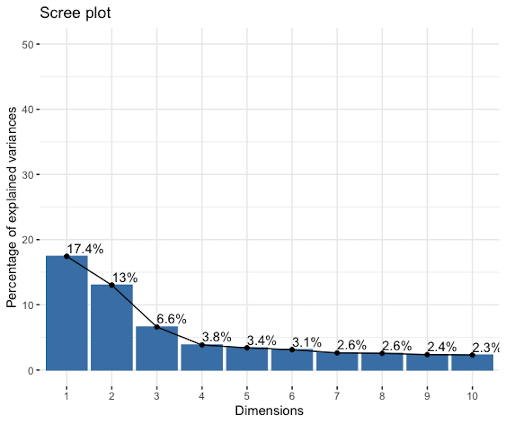Step 4 ranks the PCs based on their eigenvalues and identifies the significant ones.
# Step 4 -> Examine the contributions of the PCs in explaining
# the variation in data.
require(factoextra )
# to use the following functions such as get_pca_var()
# and fviz_contrib()
fviz_screeplot(pca.AD, addlabels = TRUE, ylim = c(0, 50))The result is shown in Figure 154. The \(1^{st}\) PC explains away \(17.4\%\) of the total variation, and the \(2^{nd}\) PC explains away \(13\%\) of the total variation. There is a change point at the \(3^{rd}\) PC, indicating that the following PCs may be insignificant.
Step 5 looks into the details of the learned PCA model, e.g., the loadings of the PCs. It leads to Figures 155 and 156 which visualize the contributions of the variables to the \(1^{st}\) and \(2^{nd}\) PC, respectively.
# Step 5 -> Examine the loadings of the PCs.
var <- get_pca_var(pca.AD) # to get the loadings of the PCs
head(var$contrib) # to show the first 10 PCs
# Visualize the contributions of top variables to
# PC1 using a bar plot
fviz_contrib(pca.AD, choice = "var", axes = 1, top = 20)
# Visualize the contributions of top variables to PC2 using
# a bar plot
fviz_contrib(pca.AD, choice = "var", axes = 2, top = 20)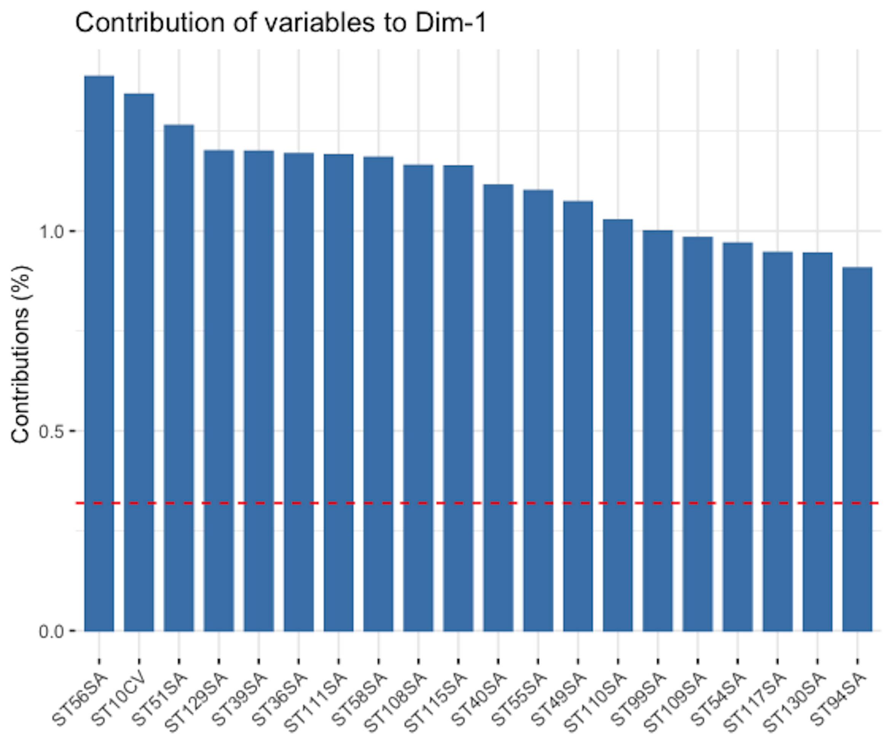 Figure 155: Loading of the \(1^{st}\) PC, i.e., coefficients are ranked in terms of their absolute magnitude and only the top 20 are shown
Step 6 implements linear regression model using the transformed data.
# Step 6 -> use the transformed data fit a line regression model
# Data pre-processing
# Transformation of the X matrix of the training data
trainX <- pca.AD$ind$coord
trainX <- data.frame(trainX)
names(trainX) <- c("PC1","PC2","PC3","PC4","PC5","PC6","PC7",
"PC8","PC9","PC10")
# Transformation of the X matrix of the testing data
testX <- predict(pca.AD , newdata = testX)
testX <- data.frame(testX$coord)
names(testX) <- c("PC1","PC2","PC3","PC4","PC5","PC6",
"PC7","PC8","PC9","PC10")
tempData <- data.frame(trainY,trainX)
names(tempData)[1] <- c("MMSCORE")
lm.AD <- lm(MMSCORE ~ ., data = tempData)
summary(lm.AD)
y_hat <- predict(lm.AD, testX)
cor(y_hat, testY)
mse <- mean((y_hat - testY)^2) # The mean squared error (mse)
mse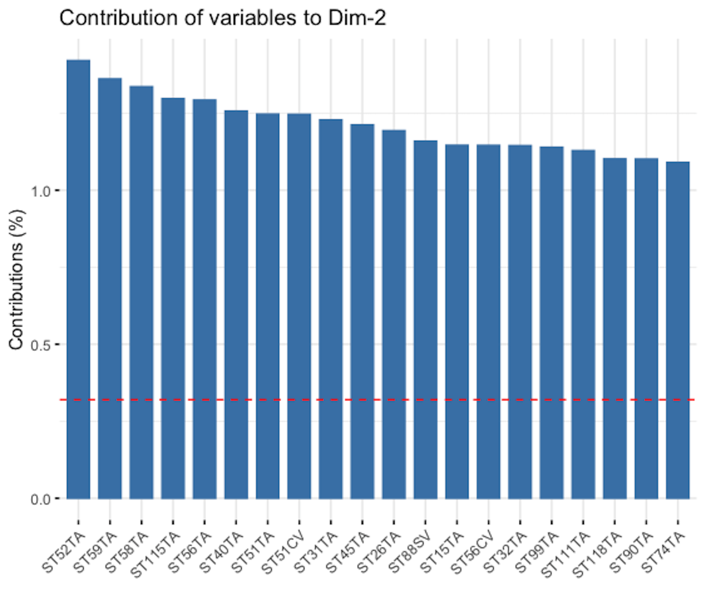 Figure 156: Loading of the \(2^{nd}\) PC, i.e., coefficients are ranked in terms of their absolute magnitude and only the top 20 are shown
The result is shown below.
##
## Call:
## lm(formula = AGE ~ ., data = tempData)
##
## Residuals:
## Min 1Q Median 3Q Max
## -17.3377 -2.5627 0.0518 2.6820 11.1772
##
## Coefficients:
## Estimate Std. Error t value Pr(>|t|)
## (Intercept) 73.68767 0.59939 122.938 < 2e-16 ***
## PC1 0.04011 0.08275 0.485 0.629580
## PC2 -0.31556 0.09490 -3.325 0.001488 **
## PC3 0.50022 0.13510 3.702 0.000456 ***
## PC4 0.14812 0.17462 0.848 0.399578
## PC5 0.47954 0.19404 2.471 0.016219 *
## PC6 -0.29760 0.20134 -1.478 0.144444
## PC7 0.10160 0.21388 0.475 0.636440
## PC8 -0.25015 0.22527 -1.110 0.271100
## PC9 -0.02837 0.22932 -0.124 0.901949
## PC10 0.16326 0.23282 0.701 0.485794
## ---
## Signif. codes: 0 '***' 0.001 '**' 0.01 '*' 0.05 '.' 0.1 ' ' 1
##
## Residual standard error: 5.121 on 62 degrees of freedom
## Multiple R-squared: 0.3672, Adjusted R-squared: 0.2651
## F-statistic: 3.598 on 10 and 62 DF, p-value: 0.0008235It is not uncommon to see that the \(1^{st}\) PC is insignificant in a prediction model. The \(1^{st}\) PC is the largest force or variation source in \(\boldsymbol{X}\) by definition, but not necessarily the one that correlates with any outcome variable \(y\) with the strongest correlation.
On the other hand, the R-squared of this model is \(0.3672\), and the p-value is \(0.0008235\). Overall, the data transformation by PCA yielded an effective linear regression model.
Beyond the 6-Step R Pipeline. PCA is a popular tool for EDA. For example, we can visualize the distribution of the data points in the new space spanned by a few selected PCs219 It may reveal some structures of the dataset. For example, for a classification problem, it is hoped that in the space spanned by the selected PCs the data points from different classes would cluster around different centers.. We use the following R script to draw a visualization figure.
# Projection of data points in the new space defined by
# the first two PCs
fviz_pca_ind(pca.AD, label="none",
habillage=as.factor(AD[train.ix,]$DX_bl),
addEllipses=TRUE, ellipse.level=0.95)The result is shown in Figure 157. Two clusters are identified, which overlap significantly. One group is the LMCI (i.e., mild cognitive impairment) and the other one is NC (i.e., normal aging). The result is consistent with the fact that the clinical difference between the two groups is not as significant as NC versus Diseased.
Figure 157: Scatterplot of the subjects in the space defined by the \(1^{st}\) and \(2^{nd}\) PCs
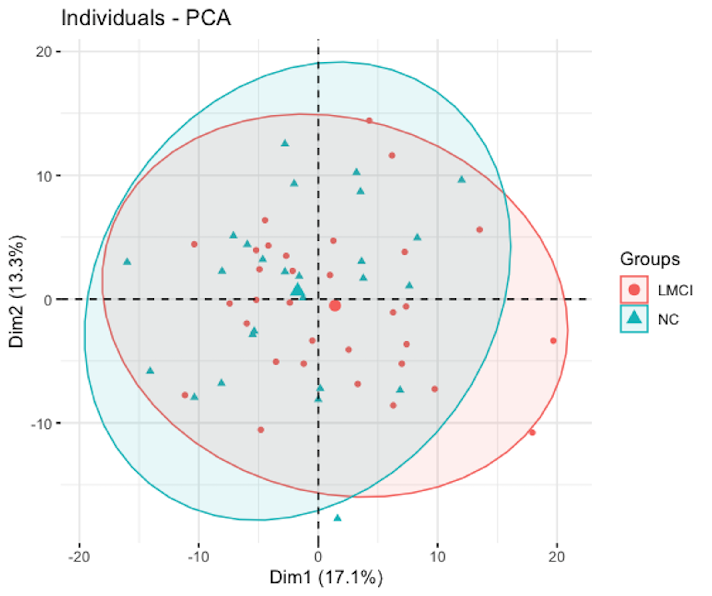Remarks
Why LASSO uses the L1 norm
LASSO is often compared with another model, the Ridge regression that was developed about \(30\) years before LASSO220 Hoerl, A.E. and Kennard, R.W. Ridge regression: biased estimation for nonorthogonal problems, Technometrics, Volume 12, Issue 1, Pages 55-67, 1970..
The formulation of Ridge regression is
\[\begin{equation} \small \boldsymbol{\hat \beta} = \arg\min_{\boldsymbol \beta} \left \{ \underbrace{(\boldsymbol{y}-\boldsymbol{X} \boldsymbol{\beta})^{T}(\boldsymbol{y}-\boldsymbol{X} \boldsymbol{\beta})}_{\text{Least squares}} + \underbrace{\lambda \lVert \boldsymbol{\beta}\rVert^2_2}_{L_2 \text{ norm penalty}} \right \} \tag{97} \end{equation}\]
where \(\lVert \boldsymbol \beta \rVert^2_2=\sum_{i=1}^p \lvert\beta_i\rvert^2\).
Ridge regression seems to bear the same spirit of LASSO—they both penalize the magnitudes of the regression parameters. However, it has been noticed that in the Ridge regression model the estimated regression parameters are less likely to be \(0\). Even with a very large \(\lambda\), many elements in \(\boldsymbol{\beta}\) may be close to zero (i.e., with a tiny numerical magnitude), but not zero221 If they are not zero, these variables can still generate impact on the estimation of other regression parameters.. This may not be entirely a surprise, as the Ridge regression is often used as a stabilization strategy to handle the multicollinearity issue or other issues that result in numerical instability of parameter estimation in linear regression, while LASSO is mainly used as a variable selection strategy.
Figure 158: Why LASSO (left) generates sparse estimates, while Ridge regression (right) does not
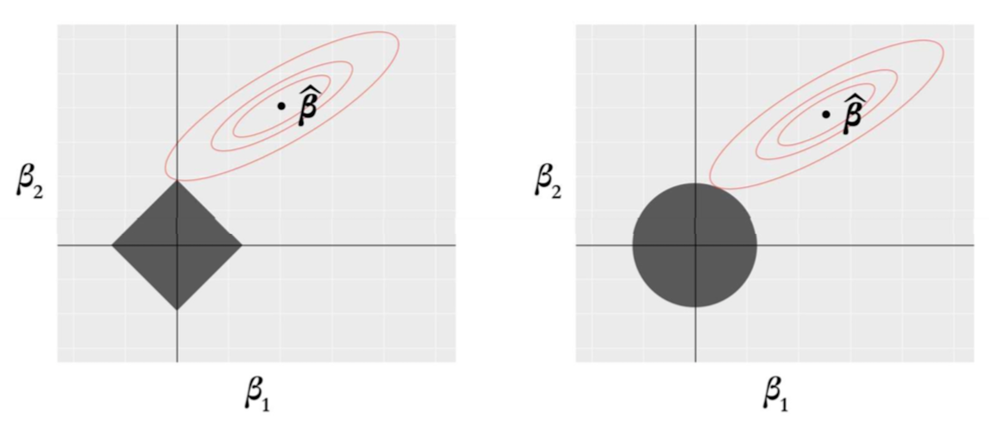To reveal why the \(L_1\) norm in LASSO regression differs from the \(L_2\) norm used in the Ridge regression, we adopt an explanation222 Hastie, T., Tibshirani, R. and Friedman, J. The Elements of Statistical Learning, \(2^{nd}\) edition. Springer, 2009. as shown in Figure 158. There are \(2\) predictors, thus, two regression coefficients \(\beta_1\) and \(\beta_2\). The contour plot corresponds to the least squares loss function which is shared by both the LASSO and the Ridge regression models. And the least squares estimator, \(\boldsymbol{\hat\beta}\), is in the center of the contour plots. The shadowed rhombus in Figure 158 (left) corresponds to the \(L_1\) norm, and the shadowed circle in Figure 158 (right) corresponds to the \(L_2\) norm. For either model, the optimal solution happens at the contact point of the two shapes.
Figure 158 shows that the contact point of the elliptic contour plot with the shadowed rhombus is likely to be one of the sharp corner points. A feature of these corner points is that some variables are zero, e.g., in Figure 158 (left), the point of contact implies that \(\beta_1 = 0\).
As a comparison, in Ridge regression, the shadowed circle has no such sharp corner points. Given the infinite number of potential contact points of the elliptic contour plot with the shadowed circle, it is expected that the Ridge regression will not result in sparse solutions with exact zeros in the estimated regression coefficients.
Following this idea223 I.e., to create sharp contact points between the elliptical contour with the shape representing the norm., the \(L_1\) norm is extended to the \(L_q\) norm, where \(q \leq 1\). For any \(q\leq 1\), we could generate sharp corner points to enable sparse solutions. The advantage of using \(q<1\) is to reduce bias in the model224 I.e., the \(L_1\) norm not only penalizes the regression coefficients of the irrelevant variables to be zero, it also penalizes the regression coefficients of the relevant variables. This is a bias in the model.. The cost of using \(q<1\) is that it will result in non-convex penalty terms, creating a more challenging optimization problem than LASSO. Considerable amounts of efforts have been devoted to two main directions: development of new norms, and development of new algorithms (i.e., which are usually iterative procedures with closed-form solution in each iteration, like the Shooting algorithm). Interested readers can read more of these works225 A good place to start with: https://github.com/jiayuzhou/SLEP and its manual (in PDF)..
The myth of PCA
While PCA has been widely used, it is often criticized as a black box model that lacks interpretability. It depends on the circumstances where the PCA is used. Sometimes, it is not easy to connect the identified principal components with physical entities. The applications of PCA in many areas have formed a convention, or a myth—some statisticians may say—such that formulistic rubrics have been invented to convert their data into patterns, then further convert these patterns into formulated sentences such as, “the variables that have larger magnitudes in the first \(3\) PCs correspond to the brain regions in the hippocampus area, indicating that these brain regions manifest significant functional connectivity to deliver the verbal function,” or “we have identified \(5\) significant PCs, and the genes that show dominant magnitudes in the loading of the \(1^{st}\) PC are all related to T-cell production and immune functions … each of the PC indicates a biological pathway that consists of these constitutional genes working together to produce specific types of proteins.” Then hear what had been said by financial analysts: “using PCA on \(100\) stocks226 Each stock is a variable., we found that the \(1^{st}\) PC consists of \(10\) stocks as their weights in the loading are significantly larger than the other stocks. This may indicate that there is strong correlation between these \(10\) stocks … consider this fact when you come up with your investment strategy…”
Having said that, sometimes there is magic in PCA.
Consider another small data example that is shown in Table 38. It has \(3\) variables and \(8\) data points.
Table 38: A dataset example for PCA
| \(x_1\) | \(x_2\) | \(x_3\) |
|---|---|---|
| \(-1\) | \(0\) | \(1\) |
| \(3\) | \(3\) | \(1\) |
| \(3\) | \(5\) | \(1\) |
| \(-3\) | \(-2\) | \(1\) |
| \(3\) | \(4\) | \(1\) |
| \(5\) | \(6\) | \(1\) |
| \(7\) | \(6\) | \(1\) |
| \(2\) | \(2\) | \(0\) |
First, we normalize the variables, i.e., for \(x_1\), we compute its mean and standard derivation first, which are \(2.375\) and \(3.159\), respectively. Then, we distract each measurement of \(x_1\) from its mean and further divide it by its standard derivation. For example, for the first measurement of \(x_1\), \(-1\), it is converted as
\[\begin{equation*} \small \frac{-1-2.375}{3.159}=-1.07. \end{equation*}\]
The second measurement, \(3\), is converted as
\[\begin{equation*} \small \frac{3-2.375}{3.159}=0.20. \end{equation*}\]
And so on.
Similarly, for \(x_2\), we compute its mean and standard derivation, which are \(3\) and \(2.88\), respectively. For \(x_3\), we compute its mean and standard derivation, which are \(0.88\) and \(0.35\), respectively …. Then the standardized dataset is shown in Table 39.227 In this example, numbers are rounded to \(2\) decimal places.
Table 39: Standardized dataset of Table 38
| \(x_1\) | \(x_2\) | \(x_3\) |
|---|---|---|
| \(-1.07\) | \(-1.04\) | \(0.35\) |
| \(0.2\) | \(0.00\) | \(0.35\) |
| \(0.2\) | \(0.69\) | \(0.35\) |
| \(-1.70\) | \(-1.73\) | \(0.35\) |
| \(0.20\) | \(0.35\) | \(0.35\) |
| \(0.83\) | \(1.04\) | \(0.35\) |
| \(1.46\) | \(1.04\) | \(0.35\) |
| \(-0.11\) | \(-0.35\) | \(-2.48\) |
We calculate the sample covariance matrix228 From \(\boldsymbol{S}\) we see that the correlation between \(x_1\) and \(x_2\) is quite large, while the correlation between them with \(x_3\) is very small. Figure 159 visualizes this relationship of the three variables. \(\boldsymbol{S}\) as
Figure 159: Visualization of the relationship between the three variables
\[\begin{equation*} \small \boldsymbol{S}=\frac{\boldsymbol{X}^T \boldsymbol{X}}{N-1} = \begin{bmatrix} 1 & 0.96 & 0.05 \\ 0.96 & 1 & 0.14 \\ 0.05 & 0.14 & 1\\ \end{bmatrix}. \end{equation*}\]
By solving the eigenvalue decomposition problem of the matrix \(\boldsymbol{S}\), we obtain the PCs and their loadings.
For the \(1^{st}\) PC, we get
\[\begin{equation*} \small \lambda_1=1.98 \, \text{ and } \, \boldsymbol{w}_{(1)}=\left[ -0.69, \, -0.70, \, -0.14\right]. \end{equation*}\]
For the \(2^{nd}\) PC, we get
\[\begin{equation*} \small \lambda_2=0.98 \, \text{ and } \, \boldsymbol{w}_{(2)}=\left[ 0.14, \,0.05, \, -0.99\right]. \end{equation*}\]
For the \(3^{rd}\) PC, we get
\[\begin{equation*} \small \lambda_3=0.04 \, \text{ and } \, \boldsymbol{w}_{(3)}=\left[ 0.70, \, -0.71, \, 0.07\right]. \end{equation*}\]
We can calculate the cumulative contributions of the three PCs
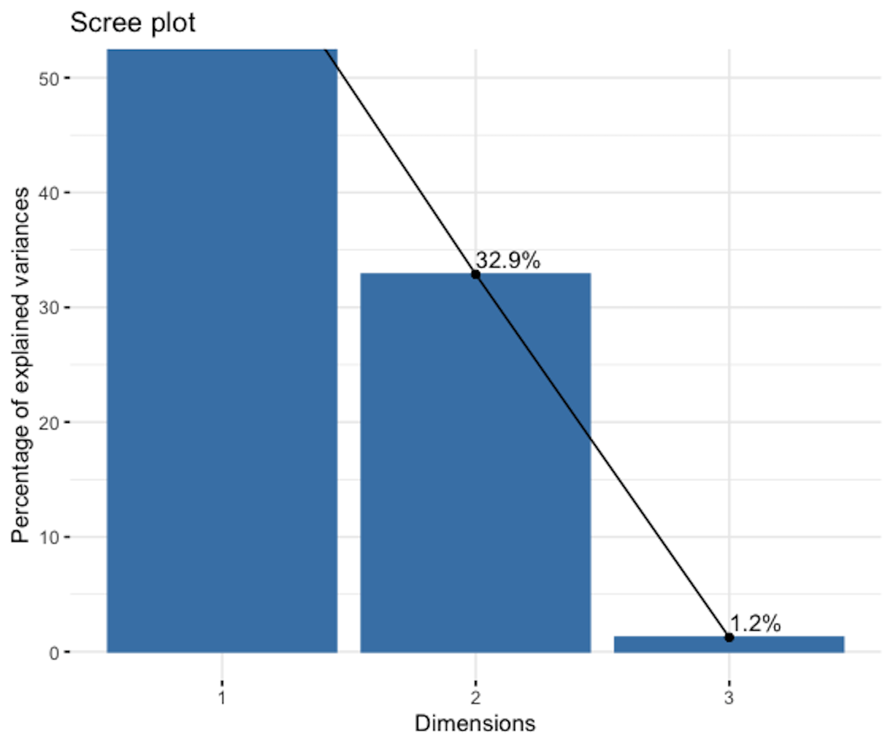 Figure 160: Scree plot of the PCA analysis on data in Table 39
\[\begin{equation*} \small \text{For the } 1^{st} \text{ PC: } 1.98/(1.98+0.98+0.04) = 0.66. \end{equation*}\]
\[\begin{equation*} \small \text{For the } 2^{nd} \text{ PC: } 0.98/(1.98+0.98+0.04) = 0.33. \end{equation*}\]
\[\begin{equation*} \small \text{For the } 3^{rd} \text{ PC: } 0.04/(1.98+0.98+0.04) = 0.01. \end{equation*}\]
The \(3^{rd}\) PC is statistically insignificant. The scree plot is shown in Figure 160.
We look into the details of the learned PCA model, e.g., the loadings of the PCs. It leads to Figure 161.
Figure 161: Loadings of the \(1^{st}\) PC (left), \(2^{nd}\) PC (middle), and \(3^{rd}\) PC (right)
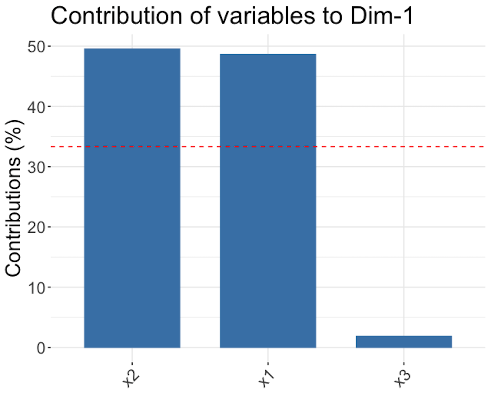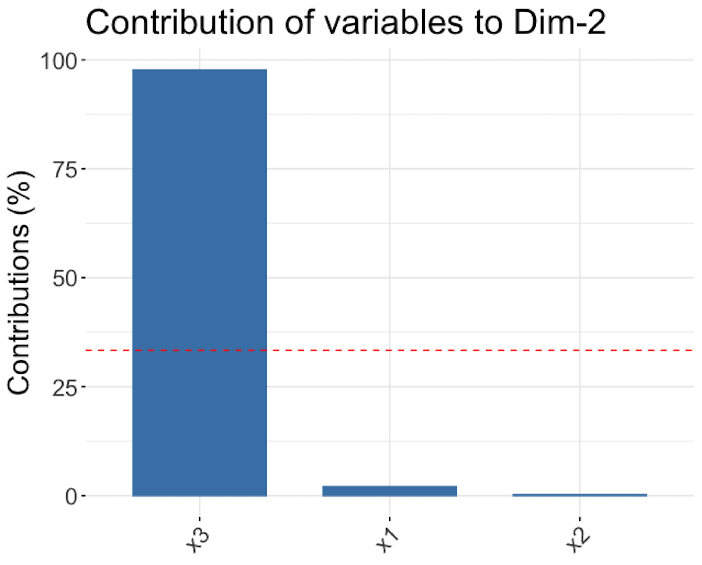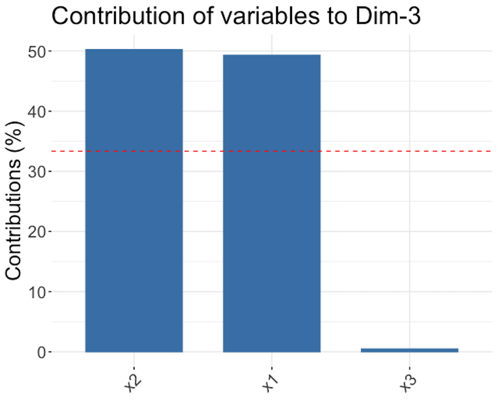Figure 161 shows that the \(1^{st}\) PC is mainly defined by \(x_1\) and \(x_2\), the \(2^{nd}\) PC is mainly defined by \(x_3\), and the \(3^{rd}\) PC, despite its small proportion of importance, mainly consists of \(x_1\) and \(x_2\) as well229 Readers may compare Figure 161 with Figure 159—Is this a coincidence?.
The R code for generating Figure 161 is shown below.
# PCA example
x1 <- c(-1,3,3,-3,3,5,7,2)
x2 <- c(0,3,5,-2,4,6,6,2)
x3 <- c(1,1,1,1,1,1,1,0)
X <- cbind(x1,x2,x3)
require(FactoMineR)
require(factoextra)
t <- PCA(X)
t$eig
t$var$coord
# Draw the screeplot
fviz_screeplot(t, addlabels = TRUE)
# Draw the variable loadings plot
fviz_contrib(t, choice = "var", axes = 1, top = 20,
sort.val = "none") +
theme(text = element_text(size = 20))
fviz_contrib(t, choice = "var", axes = 2, top = 20,
sort.val = "none") +
theme(text = element_text(size = 20))
fviz_contrib(t, choice = "var", axes = 3, top = 20,
sort.val = "none") +
theme(text = element_text(size = 20))Now, suppose that there is an outcome variable \(y\). Data in Table 38 is augmented with a new column, as shown in Table 40.
Table 40: Table 38 is augmented with an outcome variable
| \(x_1\) | \(x_2\) | \(x_3\) | \(y\) |
|---|---|---|---|
| \(-1\) | \(0\) | \(1\) | \(1.33\) |
| \(3\) | \(3\) | \(1\) | \(0.70\) |
| \(3\) | \(5\) | \(1\) | \(2.99\) |
| \(-3\) | \(-2\) | \(1\) | \(-1.78\) |
| \(3\) | \(4\) | \(1\) | \(0.07\) |
| \(5\) | \(6\) | \(1\) | \(4.62\) |
| \(7\) | \(6\) | \(1\) | \(3.87\) |
| \(2\) | \(2\) | \(0\) | \(0.58\) |
The goal is to build a linear regression model to predict \(y\).
# Build a linear regression model
x1 <- c(-1,3,3,-3,3,5,7,2)
x2 <- c(0,3,5,-2,4,6,6,2)
x3 <- c(1,1,1,1,1,1,1,0)
X <- cbind(x1,x2,x3)
y <- c(1.33,0.7,2.99,-1.78,0.07,4.62,3.87,0.58)
data <- data.frame(cbind(y,X))
lm.fit <- lm(y~., data = data)
summary(lm.fit)The result is shown below.
## Call:
## lm(formula = y ~ ., data = data)
## Coefficients:
## Estimate Std. Error t value Pr(>|t|)
## (Intercept) -0.64698 1.60218 -0.404 0.707
## x1 -0.03686 0.67900 -0.054 0.959
## x2 0.65035 0.75186 0.865 0.436
## x3 0.37826 1.75338 0.216 0.840
##
## Residual standard error: 1.546 on 4 degrees of freedom
## Multiple R-squared: 0.6999, Adjusted R-squared: 0.4749
## F-statistic: 3.11 on 3 and 4 DF, p-value: 0.1508The R-squared is \(0.6999\), but the three variables are not significant. This is unusual. Recall that \(x_1\) and \(x_2\) are highly correlated—there is an issue of multicollinearity in this dataset.
Try a linear regression model with \(x_1\) and \(x_3\).
# Build a linear regression model
lm.fit <- lm(y~ x1 + x2, data = data)
summary(lm.fit)The result is shown below.
## Call:
## lm(formula = y ~ ., data = data)
## Coefficients:
## Estimate Std. Error t value Pr(>|t|)
## (Intercept) -0.4764 1.5494 -0.307 0.7709
## x1 0.5282 0.1805 2.927 0.0328 *
## x3 0.8793 1.6127 0.545 0.6090
##
## Residual standard error: 1.507 on 5 degrees of freedom
## Multiple R-squared: 0.6438, Adjusted R-squared: 0.5013
## F-statistic: 4.519 on 2 and 5 DF, p-value: 0.07572Now \(x_1\) is significant. Without fitting another model, we know that \(x_2\) has to be significant as well, i.e., as shown in Figure 159, \(x_1\) and \(x_2\) are two highly correlated variables that are just like one variable. But because of the multicollinearity, when both are included in the model, neither turns out to be significant.
To overcome the multicollinearity, we have mentioned that the Principal Component Regression (PCR) method is a good approach. First, we calculate the transformed data (i.e., the projections of the data points on the PCs, as shown in Figure 151) using Eq. (92). Results are shown in Table 41. An important characteristic of the new variables, \(\text{PC}_1\), \(\text{PC}_2\), and \(\text{PC}_3\), is that they are orthogonal to each other, and thus, their correlations are \(0\).
Table 41: The coordinates of the white dots, i.e., aka, the projections of the data points on the PCs
| \(\text{PC}_1\) | \(\text{PC}_2\) | \(\text{PC}_3\) |
|---|---|---|
| \(1.43\) | \(-0.55\) | \(0.01\) |
| \(-0.18\) | \(-0.32\) | \(0.16\) |
| \(-0.67\) | \(-0.29\) | \(-0.33\) |
| \(2.36\) | \(-0.68\) | \(0.06\) |
| \(-0.43\) | \(-0.30\) | \(-0.08\) |
| \(-1.36\) | \(-0.18\) | \(-0.13\) |
| \(-1.80\) | \(-0.09\) | \(0.31\) |
| \(0.66\) | \(2.41\) | \(-0.01\) |
Then we can build a linear regression model of \(y\) using the three new predictors, \(\text{PC}_1\), \(\text{PC}_2\), and \(\text{PC}_3\). The result is shown below.
## Call:
## lm(formula = y ~ PC1 + PC2 + PC3, data = data)
## Coefficients:
## Estimate Std. Error t value Pr(>|t|)
## (Intercept) 1.54750 0.54668 2.831 0.0473 *
## PC1 -1.25447 0.41571 -3.018 0.0393 *
## PC2 -0.06022 0.58848 -0.102 0.9234
## PC3 -1.39950 3.02508 -0.463 0.6677
##
## Residual standard error: 1.546 on 4 degrees of freedom
## Multiple R-squared: 0.6999, Adjusted R-squared: 0.4749
## F-statistic: 3.11 on 3 and 4 DF, p-value: 0.1508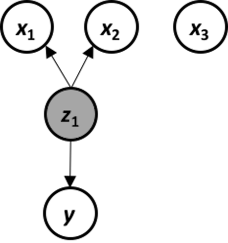 Figure 162: Visualization of the relationship between all the variables
\(\text{PC}_1\) is significant. Since \(\text{PC}_1\) is mainly defined by \(x_1\) and \(x_2\), this is consistent with all the analysis done so far, and a structure of the relationships between the variables is revealed in Figure 162.
Exercises
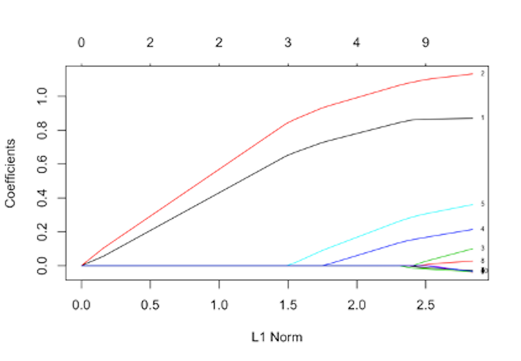 Figure 163: The path trajectory of a LASSO model
1. Figure 163 shows the path trajectory generated by applying glmnet() on a dataset with \(10\) predictors. Which two variables are the top two significant variables (note the index of the variables is shown in the right end of the figure)?
2. Consider the dataset shown in Table 42. Set \(\lambda = 1\) and initial values for \(\beta_1 = 0\), and \(\beta_2 = 1\). Implement the Shooting algorithm by manual operation. Do one iteration. Report \(\beta_1\) and \(\beta_2\).
Table 42: Dataset for Q2
| \(x_1\) | \(x_2\) | \(y\) |
|---|---|---|
| \(-0.15\) | \(-0.48\) | \(0.46\) |
| \(-0.72\) | \(-0.54\) | \(-0.37\) |
| \(1.36\) | \(-0.91\) | \(-0.27\) |
| \(0.61\) | \(1.59\) | \(1.35\) |
| \(-1.11\) | \(0.34\) | \(-0.11\) |
3. Follow up on the dataset in Q2. Use the R pipeline for LASSO on this data. Compare the result from R and the result by your manual calculation.
4. Conduct a principal component analysis for the dataset shown in Table 43. Show details of the process.
Table 43: Dataset for Q4
| \(x_1\) | \(x_2\) | \(x_3\) | \(x_4\) |
|---|---|---|---|
| \(1\) | \(1.8\) | \(2.08\) | \(-0.28\) |
| \(2\) | \(3.6\) | \(-0.78\) | \(0.79\) |
| \(1\) | \(2.2\) | \(-0.08\) | \(-0.52\) |
| \(2\) | \(4.3\) | \(0.38\) | \(-0.47\) |
| \(1\) | \(2.1\) | \(0.71\) | \(1.03\) |
| \(2\) | \(3.6\) | \(1.29\) | \(0.67\) |
| \(1\) | \(2.2\) | \(0.57\) | \(0.15\) |
| \(2\) | \(4.0\) | \(1.12\) | \(1.18\) |
(a) Standardize the dataset (i.e., by making the means of the variables to be zero, and the standard derivations of the variables to be \(1\)). (b) Calculate the sample covariance matrix (i.e., \(\boldsymbol{S} =(\boldsymbol{X}^T\boldsymbol{X})/(N-1))\). (c) Conduct eigenvalue decomposition on the sample covariance matrix, obtain the four eigenvectors and their eigenvalues. (d) Report the percentage of variances that could be explained by the four PCs, respectively. Draw the screeplot. How many PCs are sufficient to represent the dataset? In other words, which PCs are significant? (e) Interpret the PCs you have selected, i.e., which variables define which PCs? (f) Convert the original data into the space spanned by the four PCs, by filling in Table 44.
Table 44: Dataset for Q4
| \(\text{PC}_1\) | \(\text{PC}_2\) | \(\text{PC}_3\) | \(\text{PC}_4\) |
|---|---|---|---|
5. Follow up on the dataset in Q2 from Chapter 7. (a) Conduct the PCA analysis on the three predictors to identify the three principal components and their contributions on explaining the variance in data; and (b) use the R pipeline for PCA to do the PCA analysis and compare with your manual calculation.
6. Suppose that we have an outcome variable that could be augmented into the dataset in Q4, as shown in Table 45. Apply the shooting algorithm for LASSO on this dataset to identify important variables. Use the following initial values for the parameters, \(\lambda=1, \beta_1=0, \beta_2=1, \beta_3=1, \beta_4=1\), and just do one iteration of the shooting algorithm. Show details of manual calculation.
Table 45: Dataset for Q6
| \(x_1\) | \(x_2\) | \(x_3\) | \(x_4\) | \(y\) |
|---|---|---|---|---|
| \(1\) | \(1.8\) | \(2.08\) | \(-0.28\) | \(1.2\) |
| \(2\) | \(3.6\) | \(-0.78\) | \(0.79\) | \(2.1\) |
| \(1\) | \(2.2\) | \(-0.08\) | \(-0.52\) | \(0.8\) |
| \(2\) | \(4.3\) | \(0.38\) | \(-0.47\) | \(1.5\) |
| \(1\) | \(2.1\) | \(0.71\) | \(1.03\) | \(0.8\) |
| \(2\) | \(3.6\) | \(1.29\) | \(0.67\) | \(1.6\) |
| \(1\) | \(2.2\) | \(0.57\) | \(0.15\) | \(1.2\) |
| \(2\) | \(4.0\) | \(1.12\) | \(1.18\) | \(1.6\) |
7. After extraction of the four PCs from Q4, use lm() in R to build a linear regression model with the outcome variable (as shown in Table 45) and the four PCs as the predictors. (a) Report the summary of your linear regression model with the four PCs; and (b) which PCs significantly affect the outcome variable?
8. Revisit Q1 in Chapter 3. Derive the shooting algorithm for weighted least squares regression with \(L_1\) norm penalty.
9. Design a simulated experiment to evaluate the effectiveness of the glmet() in the R package glmnet. (a) For instance, you can simulate \(20\) samples from a linear regression model with \(10\) variables, where only \(2\) out of the \(10\) variables are truly significant, e.g., the true model is
\[\begin{equation*}
\small
y = \beta_{1}x_1 +\beta_{2}x_2 + \epsilon,
\end{equation*}\]
where \(\beta_{1} = 1\), \(\beta_{2} = 1\), and
\[\begin{equation*}
\small
\epsilon \sim N\left(0, 1\right).
\end{equation*}\]
You can simulate \(x_1\) and \(x_2\) using the standard normal distribution \(N\left(0, 1\right)\). For the other \(8\) variables, \(x_3\) to \(x_{10}\), you can simulate each from \(N\left(0, 1\right)\). In data analysis, we will use all \(10\) variables as predictors, since we won’t know the true model. (b) Run lm() on the simulated data and comment on the results. (c) Run glmnet() on the simulated data, and check the path trajectory plot to see if the true significant variables could be detected. (d) Use the cross-validation process integrated into the glmnet package to see if the true significant variables could be detected. (e) Use rpart() to build a decision tree and extract the variable importance score to see if the true significant variables could be detected. (f) Use randomforest() to build a random forest model and extract the variable importance score, to see if the true significant variables could be detected.